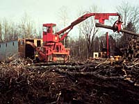

There are a number of determining factors in choosing a harvesting
system:
- the kind of forest wanted in the future the long-term habitat
objectives of the wildlife species in the area
- the needs and wants of all forest users
- environmental considerations such as the presence of unwanted
growth
- the proposed regeneration method
- economics

In order to harvest, companies are given forest tenure. This means that the company has the right to harvest the forest in exchange for royalties, called stumpage. The company must comply with specific forest management practices and conditions for example, timely reforestation. |
Harvesting the forest should be done in a planned way with the goal of maintaining the productivity of the forest. There are two methods of cutting that may be followed: |
1. Intermediate cutting - Intermediate cutting is cutting that takes place during the time the forest is growing from replanting to harvest. A number of activities are included in intermediate cutting: |
- thinning to allow more sunlight to reach the trees that are
left, remove saleable trees and improve the growth of the remaining
trees
- removing taller trees so that other trees can grow
- removing injured, diseased or insect-infected trees so that
other healthy trees can grow
- removing trees that are not wanted in the stand
 2. Harvest cutting - Harvest cutting is cutting that takes place when the forest is ready for commercial use. There are four ways this may be accomplished: |
- Selective cutting
is done when the forest includes different ages of trees. The trees that are ready to be harvested are cut and the others are allowed to continue growing. - Shelterwood cutting
is when about one half the trees are cut first and the remaining are left to produce seeds. After the seedfall occurs, the remaining trees are cut. - Seed-tree cutting
is when most of the trees are removed at harvest. Only a few, high quality trees are left to produce seeds. After new growth has begun, the seed trees are cut. - Clearcutting
is when all of the trees in a forested area are harvested at the same time. Clearcutting has been used in the past in certain areas. Clearcutting has been encouraged to increase productivity and use all the tree species in an area of the forest. It is also an economical harvesting practice.
Clearcutting is part of good forest management practices, and it may be the best choice on certain sites. For example, some species of trees do not grow well in the shade. They need sunlight. Clearcutting provides the open, sunny space needed for these species to grow into a healthy, new forest. |
The majority of the wood in Saskatchewan is harvested using the tree length method. This means that the trees are felled manually with chainsaws or mechanically with large harvesting machines. The tops and branches are removed and left in the forest to decompose. These remains are called slash. The tree lengths are dragged to the roadside by wheeled or tracked vehicles, piled on large logging trucks and transported to the sawmill or pulp and paper mill. |
If an area has too much slash, the growth of young trees will be suppressed. Thick slash also makes tree planting difficult. Site preparation machines are used to break up the slash and expose the soil. |
Sustained Yield and the Future
All harvesting methods are based on one general principle, sustained yield. This means that the amount of wood (by volume) harvested in a forest is equal to, or less than, the amount of annual growth in a forest. |

The forest management practice of sustained yield is directly related to tree growth. Each species grows at a different rate. Region and age are also factors in growth rate. Most trees in Saskatchewan take between 60 and 100 years to reach harvest maturity. If harvesting were the only method of removing trees from a forest, a new crop of trees would be ready to harvest on the first area cut at the same time as the final area was cut. The consequences of fire, insects and disease, are included in the concept of sustained yield. |
Informed decisions should be made at the local level because many factors enter into the decision-making process of harvesting.